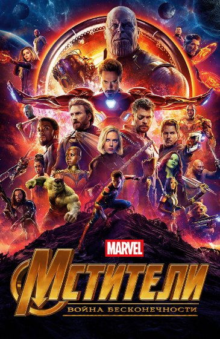
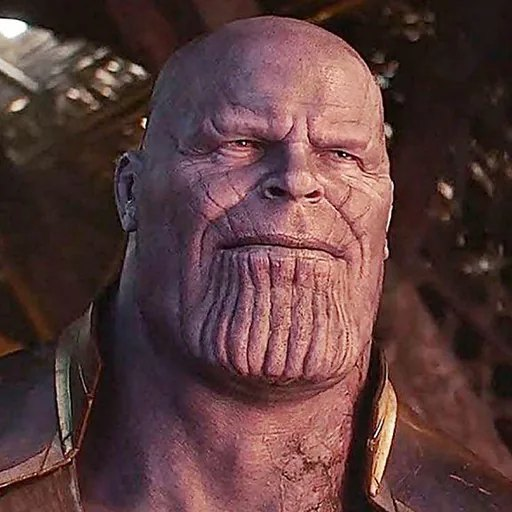
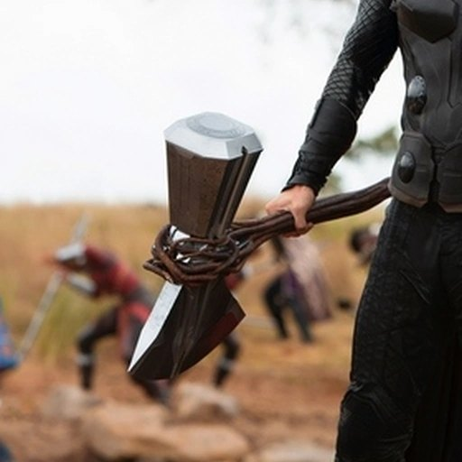
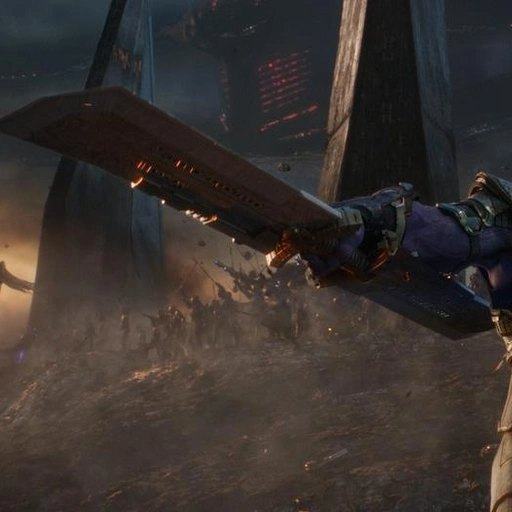

Почему Танос без Камней оказался опаснее Таноса с шестью Камнями?
В «Войне бесконечности» Тор почти убил Таноса, получившего все шесть Камней. В «Финале» тот же злодей — уже без Камней — противостоял Тору, Стиву и Тони одновременно. Неужели версия из 2014 года сильнее?

Танос в «Войне бесконечности» владел шестью Камнями, но едва не погиб от одного удара Тора. В «Финале» тот же злодей без Камней сражается сразу с Тором, Капитаном Америкой и Железным человеком. Разберём этот парадокс по конкретным сценам, не подменяя факты рейтингами силы.
Один злодей, две совершенно разные битвы
В «Войне бесконечности» Тор появляется в Ваканде с Громсекирой и почти убивает Таноса, у которого уже все шесть Камней. В «Финале» тот же Тор вместе с Железным человеком и Капитаном Америкой сражается против Таноса без единого Камня — и оказывается на грани гибели.
На первый взгляд логика сломана: почему противник без Перчатки кажется сильнее, чем с полной властью над реальностью?
Есть важная деталь: в «Финале» сражается Танос образца 2014 года, который ещё не пережил пятилетнюю кампанию по сбору Камней и не выполнил свой план. Он приходит вооружённым, готовым к прямой войне. А в 2018 году перед нами Танос, который уже приближается к своей цели и не всегда считает уничтожение каждого врага необходимым.
Сравнивать эти столкновения как два одинаковых боя неправильно. Они различаются мотивом, подготовкой, оружием, дистанцией и состоянием самих героев.
Почему Танос из «Войны бесконечности» часто не добивал героев?
В первой сцене фильма Танос расправляется с Локи, убивает Хеймдалля, а позже приносит в жертву Гамору и вырывает Камень Разума из головы Вижна. Поэтому назвать его милосердным невозможно.
Но посмотри, как он действует против большинства встреченных Мстителей. На Титане он обезвреживает Стражей Галактики, Питера Паркера, Стрэнджа и остальных, а затем уходит с Камнем. В Ваканде отбрасывает героев и движется прямо к Вижну. Возможность уничтожить противников по одному у него появляется, но он не всегда ею пользуется.
Почему? Это не сказано прямым текстом, но с философией Таноса сочетается версия, что он хочет провести свой «беспристрастный» Щелчок, а не лично решать судьбу каждого встречного. Его задача — взять Камни; лишние драки только мешают.
При этом есть исключения: Тони Старка Танос едва не убивает и останавливается лишь после сделки со Стрэнджем. Его сдержанность — не моральное оправдание, а тактика фанатика, уверенного в правильности конечной цели.
Что изменилось в мышлении Таноса из 2014 года?
Танос из «Финала» узнаёт, что его будущая версия добьётся успеха, но Мстители потом отменят результат. Для него это доказательство, что уничтожения половины жизни недостаточно: оставшиеся всё равно будут помнить потерянных и сопротивляться.
Поэтому он объявляет новую цель: уничтожить всю Вселенную и создать другую, не помнящую прежнего мира. Речь уже не о придуманном им «равновесии», а об окончательном подавлении сопротивления.
На поле боя он действует иначе. Вместо того чтобы проходить мимо противников, Танос атакует их непосредственно, использует броню, парирует удары двусторонним клинком, не даёт троице Мстителей развернуть длительное наступление.
Это делает его страшнее, но не доказывает, что версия 2014 года объективно физически сильнее версии 2018-го. У нас нет сцены, где эти два Таноса сравниваются напрямую. Мы видим разные способы применения уже огромной силы.

Почему Танос настолько силён без всяких Камней?
Танос с рождения принадлежит к могущественной внеземной расе титанов, и уже без Перчатки демонстрирует выдающуюся прочность, силу и выносливость. Он выдерживает удары, которые вывели бы из строя обычного человека или даже вооружённого земного суперсолдата.
Но в фильмах КВМ механизм его могущества подробно не объяснён. В комиксах Танос связан с Вечными и Девиантами, однако переносить эту биографию в кино без отдельного подтверждения нельзя. Киновселенная не формулирует точного рейтинга его силы по отношению к Тору и Халку.
Его преимущество — не только мышцы. Танос умеет ловить противника на ошибках, работает корпусом, блокирует удары и использует окружающее пространство. В отличие от многих врагов Халка, он не просто обменивается с ним ударами, а последовательно разрушает защиту.
На протяжении фильмов Танос показан как опытный завоеватель. При этом цифры вроде «он сильнее Халка в три раза» или «он неуязвим к асгардцам» — фанатские оценки, не факт, установленный кино.
Халк проиграл из-за Камня силы или мастерства Таноса?
В начале «Войны бесконечности» Халк бросается на Таноса на борту асгардского корабля. Сначала он навязывает ближний бой, но Танос быстро перехватывает инициативу. Он отводит удары, отвечает точными попаданиями и лишает Халка возможности использовать преимущество грубой силы.
На Перчатке у Таноса уже есть Камень силы. Однако в самой схватке мы не видим его характерного активного энергетического свечения или отдельного удара Камнем. Джо Руссо объяснял, что исход связан прежде всего с мастерством Таноса как бойца.
Это не означает, что Халк слаб или что в принципе никогда не смог бы победить Таноса. Но конкретная сцена демонстрирует разницу между яростной атакой и холодным, технически точным поединком.
И здесь возникает интересная параллель с Тором. Тор достаточно силён, чтобы нанести Таносу смертельную рану мощным оружием. Но в длительной рукопашной схватке сила не отменяет преимуществ опытного противника в выборе дистанции и времени удара.
В 2018 году Тор победил Таноса — или всё-таки нет?
Новый топор Тора выковывают в Нидавеллире. В финале «Войны бесконечности» Тор бросает Громсекиру в Таноса. Топор преодолевает направленный навстречу энергетический поток Перчатки и вонзается в грудь злодея.
Физически это невероятно сильный результат. Ещё немного — и Танос был бы мёртв. Но важно различать удачную внезапную атаку и победу в полноценном поединке. Тор не выдержал длинного боя против владельца шести Камней — он воспользовался моментом, когда Танос не оценил угрозу нового оружия.
Вместо немедленного смертельного удара Тор хочет заставить врага осознать, кто пришёл мстить. Задержка позволяет Таносу щёлкнуть пальцами. После этого злодей уходит через Камень Пространства, несмотря на рану.
Громсекира здесь не сделала Тора всемогущим. Она дала ему ровно то, чего раньше не хватало: оружие, способное пробить защиту противника. Остальное зависело от выбора самого Тора.
Почему Громсекира прошла сквозь силу шести Камней?
Частый вывод звучит так: если топор пробил луч Перчатки, то Громсекира сильнее Камней бесконечности. Но это сравнение некорректно.
На экране Танос применяет конкретную направленную энергетическую атаку. Топор преодолевает именно её. Мы не видим проверки Громсекиры против остановки времени, изменения самой материи, телепортации или полного стирания из реальности.
Братья Руссо отдельно поясняли, что Танос был застигнут врасплох и не знал возможностей нового оружия. По их словам, у него могли быть другие способы применить Камни, если бы он понял, что к нему летит. Это объясняет сцену, не делая топор сильнее всей Перчатки при любых обстоятельствах.
Например, можно представить попытку перенести оружие Камнем Пространства, изменить его свойства Камнем Реальности или выиграть время с помощью Камня Времени. Но это наши гипотетические варианты, не показанные действия Таноса.

Комментарий режиссёров о неожиданности атаки: обсуждение Джо и Энтони Руссо.
Почему Тор в «Финале» уже не смог повторить успех?
В «Финале» Танос готов к серьёзному бою. У него броня, двусторонний клинок, знание противника и совершенно другая цель. Он не пренебрегает угрозой от Громсекиры и не подставляет грудь под внезапный бросок.
Тор же пережил пять лет вины, отчаяния и отчуждения. Он всё ещё способен призвать молнию, Мьёльнир и Громсекиру. Фильм не утверждает, что лишний вес автоматически лишил его божественной силы. Но его прежняя уверенность и тактическая собранность явно изменились.
Во время поединка он сражается в основном на близкой дистанции и не демонстрирует весь спектр того, на что был способен в «Рагнарёке» и «Войне бесконечности». Есть эпизоды применения молнии, но её возможностей в прямой атаке против Таноса фильм раскрывает гораздо меньше, чем можно было ожидать.
Поэтому можно объяснить исход подготовкой Таноса и состоянием Тора, но не стоит делать вид, будто вопросов нет: ограниченное использование разнообразных способностей Тора остаётся заметной драматургической условностью.
А почему с Таносом не справились Тони и Стив?
В начале финальной битвы Тор не один. Вместе с ним выступают Тони Старк и Стив Роджерс. На бумаге трое сильнейших опытных Мстителей должны иметь огромное преимущество.
Но на экране они не проводят длительную совместную комбинацию. Танос разделяет их по дистанции, первым выводит из активной схватки Тони, затем переживает несколько атак Тора и вступает в дуэль со Стивом, которому удаётся поднять Мьёльнир.
Стив великолепно использует молот и щит, но превосходство Таноса в прочности и физической мощи постепенно сказывается. Боец, который привык завершать схватки с обычными сверхлюдьми, сталкивается с противником космического масштаба.
У Таноса нет Камней, но он не становится «обычным громилой». В ближнем бою его броня и меч компенсируют отсутствие Перчатки лучше, чем кажется зрителю, запомнившему почти смертельную рану 2018 года.
Из чего сделан клинок, которым Танос разрубил щит?
Один из самых поразительных моментов «Финала» — двусторонний меч Таноса разбивает вибраниумный щит Стива Роджерса. Технология, переживавшая невероятные удары в предыдущих фильмах, не выдерживает нескольких последовательных попаданий.
Создатели фильма признавали, что неизвестный материал клинка превосходит вибраниум по этому показанному параметру. Но точный металл ни в фильме, ни в комментарии авторов не назван.
Возможные версии — уру, особый инопланетный сплав или оружие, изготовленное Эйтри на Нидавеллире. Джо Руссо допускал, что Танос мог заказать клинок знакомому кузнецу, но это была гипотеза, а не официальное раскрытие происхождения.
Приписывать оружию адамантий лишь потому, что он известен по историям Росомахи, тоже нельзя. Для энциклопедии наиболее точная формулировка: «двусторонний клинок из неизвестного сверхпрочного материала; происхождение не подтверждено».

Разбор комментариев авторов: о клинке и вибраниуме.
Почему щелчок травмировал Халка сильнее, чем Таноса?
Важно уточнить предпосылку вопроса: Щелчок повредил Таноса. В конце «Войны бесконечности» его рука и Перчатка обожжены. В начале «Финала», после второго использования Камней для их уничтожения, состояние Таноса ещё тяжелее: рука почти выведена из строя, тело обессилено.
Брюс Бэннер щёлкает в наноперчатке Старка, чтобы вернуть исчезнувших. Он надеется выдержать нагрузку, поскольку действие Камней преимущественно связано с гамма-излучением. Но это не гарантирует безопасности: после использования рука Халка получает страшные повреждения.
Условия различаются: Танос носит созданную Эйтри Перчатку и применяет её дважды; Бэннер использует земной нанотехнологический аналог; сила каждого желания и особенности носителя тоже могут иметь значение. Однако фильм не даёт точной формулы, по которой можно рассчитать повреждения или назвать один организм строго устойчивее другого.
Важнее общая закономерность: смертельно опасная энергия Камней калечит даже самых сильных существ. Для Тони она становится фатальной. Танос не исключение из этого правила.
Итог: Танос не стал сильнее — он перестал сдерживаться
Версия 2018 года целеустремлённо собирала Камни и часто предпочитала обойти противников. Версия 2014 года пришла уничтожать сопротивление силой, в броне, с мощнейшим клинком и без намерения кому-то оставлять право на победу.
Тор в 2018 году пробил защиту Таноса неожиданной атакой Громсекиры, но не выиграл затяжной поединок. В 2023 году Танос к ней уже подготовился, а Тор сражался после пяти лет тяжёлого личного кризиса. Халка же Танос победил благодаря сочетанию собственной силы и боевой техники.
Главная разгадка парадокса — в целях противников, готовности к конкретному оружию и разнице между удачным ударом и полноценной битвой. Но не всё закрывается объяснением: фильмы сознательно не раскрывают состав клинка и не дают убедительного ответа, почему в «Финале» Тор так ограниченно использует весь набор своих способностей.
Фильмы и комментарии авторов
«Мстители: Война бесконечности» (2018): бой Таноса с Халком, Титан, Ваканда и первый Щелчок. «Мстители: Финал» (2019): Танос из 2014 года, финальная битва, клинок, Щелчок Бэннера и последствия уничтожения Камней.
Комментарии создателей: братья Руссо о Громсекире и внезапной атаке; сценаристы о прочности клинка; режиссёры о повреждениях Таноса. Предположения о вариантах применения Камней и составе металла обозначены как гипотезы.